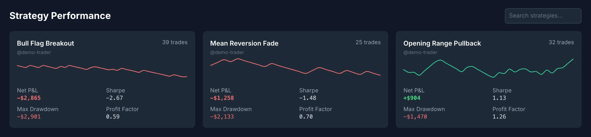
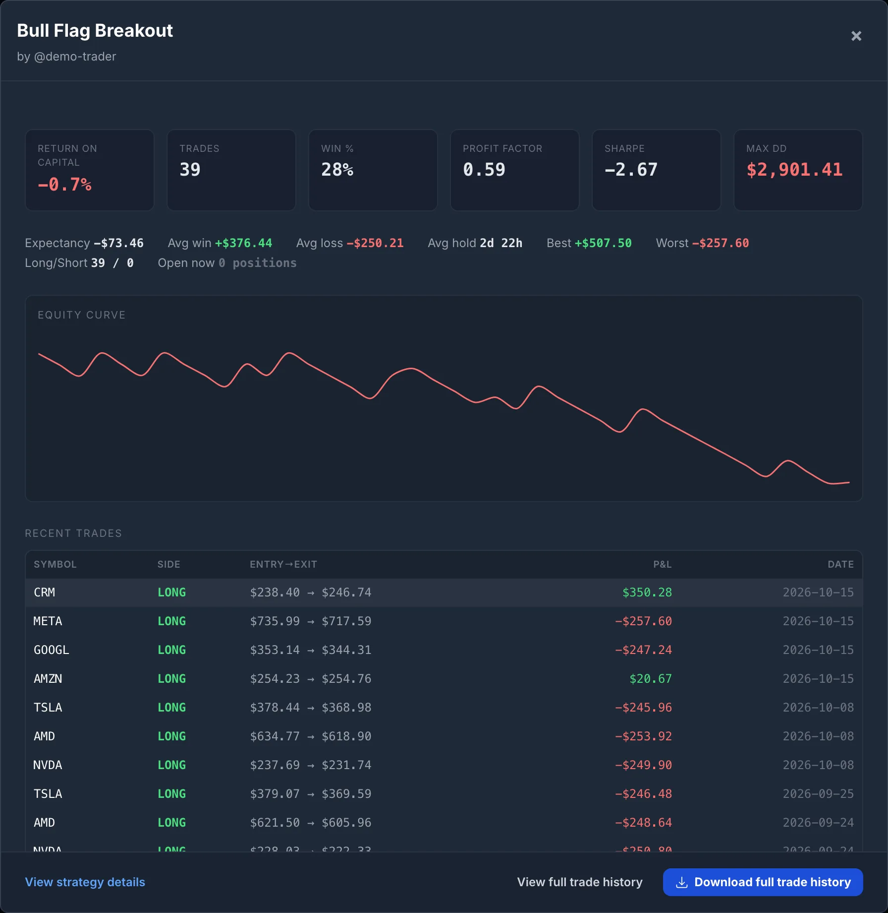
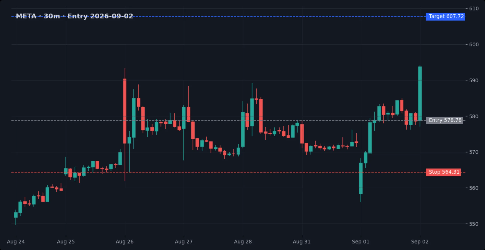
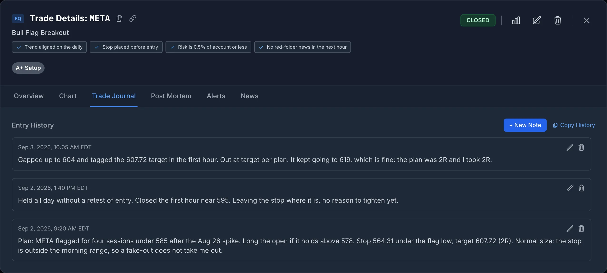
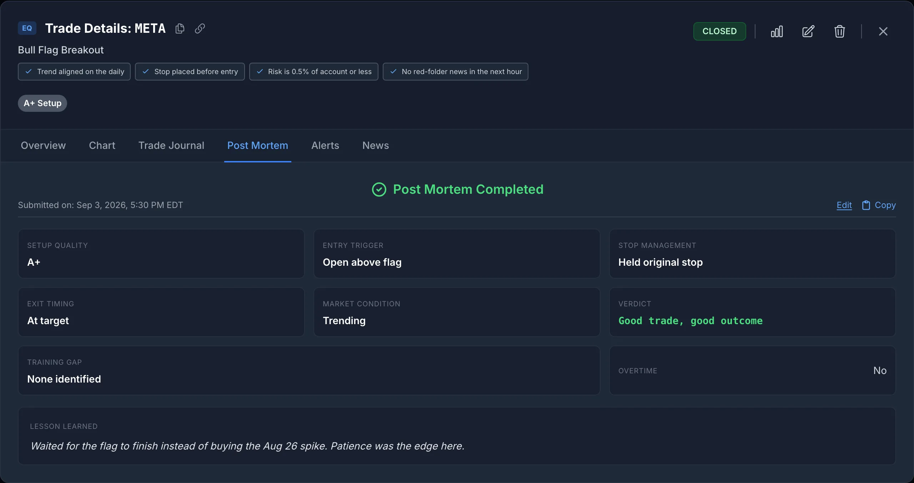
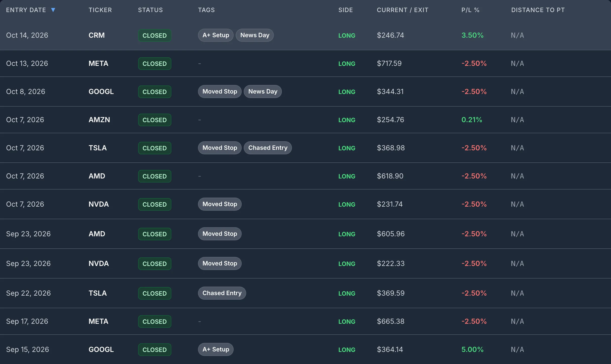
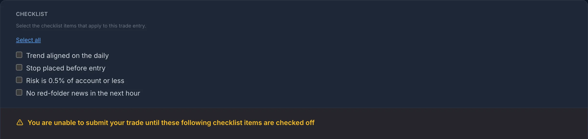

The Spreadsheet Is Not the Problem. The Second Strategy Is.
Almost every trader starts journaling in a spreadsheet, and for a while it is the right call. One strategy, one account, a row per trade: date, symbol, side, entry, exit, size, result. A SUM at the bottom tells you whether you are up. Nothing about that needs software.
The trouble starts the day you add a second strategy, and it gets worse with each one after. The questions you actually want answered stop being about the account and start being about the strategies inside it. Which one is paying for the others? Which one is in a drawdown the account total is hiding? Was that loss a bad setup or a good setup managed badly? What did the chart look like when you took it? A spreadsheet can technically answer every one of those. It just makes you build and maintain the machinery for each answer by hand, and it is the maintenance, not the formulas, that kills it.
Where It Breaks, In the Order It Breaks
1. The strategy column drifts
In month one the column says Bull Flag. By month three it says Bull Flag, bull flag, BF, Bull Flag (A+) and Flag - early, and your pivot table thinks you trade five strategies. Every per-strategy number you compute after that is quietly split across spellings. A dropdown fixes the typing, but not the history: rename a strategy or split one into two and every old row still carries the old label.
In SignalDeck a strategy is a record, not a string. Trades point at it, so renaming it renames it everywhere, and there is no way to log a trade against a strategy that does not exist.
2. Per-strategy numbers need a formula block per strategy
Net profit per strategy is one SUMIFS. Win rate, average win, average loss, expectancy and profit factor are a handful more. Maximum drawdown per strategy is where it turns ugly: drawdown is path-dependent, so you need a running cumulative sum of only that strategy's trades, in date order, with a running peak beside it, and a separate pair of columns for every strategy. An equity curve per strategy means a chart per strategy. Add a fourth strategy and you copy the whole block and fix the ranges. Miss one range and a number is wrong with no error to tell you.
SignalDeck's Strategy Performance screen computes all of it from the trades themselves: for every strategy, net P&L, trade count, win rate, profit factor, expectancy, Sharpe, maximum drawdown, average win and loss, best and worst trade, average hold time, the long and short split, and an equity curve. A new strategy gets its row the moment its first trade is logged. Nothing to copy, no ranges to repair.


3. Screenshots live somewhere else
The chart at entry is the single most useful thing to look at when you review a trade, because it is the only record of what you saw before you knew how it ended. In a spreadsheet it is a link to a file in a folder. The folder gets reorganised, the link breaks, or the screenshot was never taken because saving, naming and linking it is four steps during a live trade. Sheets and Excel will put an image in a cell, at a size no one can read a chart at, and the exit chart needs a second cell.
In SignalDeck every trade has an entry screenshot and an exit screenshot, attached to the trade itself. You can add them when you log a new trade, when you edit one, on a broker-import row before you import it, and in the close-trade form when you exit. When you open the trade later, the charts are there beside the numbers.

4. One notes cell has to hold the whole trade
A trade produces at least three things worth writing down at three different times: the thesis before entry, what you noticed while it was open, and why you got out. In a spreadsheet those all go into one cell, which is either overwritten as the trade goes on, or grows into a paragraph that wraps the row to six lines tall. And free text cannot be counted. You cannot ask a notes cell how often you moved your stop.
SignalDeck keeps these apart. Trade notes are separate, timestamped entries on the trade, so the pre-entry thesis survives the exit. The post-mortem on a closed trade is structured: setup quality, stop management, a verdict, training gaps and mentor feedback, as fields rather than prose, so they can be read across every trade instead of one at a time. Daily journal entries hold the things that belong to the day rather than to a trade.


5. Tags do not fit in a column
The labels that explain trades are rarely one per trade. A single trade can be A+ setup, news day and moved stop at once. A spreadsheet gives you two bad options: a comma-separated cell that no pivot table can split, or a column per tag that grows sideways forever. Either way, "show me every trade in this strategy where I moved my stop" becomes a manual filter job.
SignalDeck tags are many-per-trade, and they stay editable after a trade is imported, so you can tag a week of trades during the weekend review rather than in the moment. Signals and the entry checklist are recorded on the trade too, so "did I follow my own rules" is a field, not a memory.

6. A spreadsheet can record a rule. It cannot enforce one.
You can add a "checklist done?" column. You will mark it yes after the fact on the trades where you skipped it. SignalDeck's entry checklist can be set as a hard gate in Trade Preferences: the Log Trade button stays disabled until every item is checked. That is a different kind of tool from a column.

Getting Into the Weeds: One Question, Two Workflows
Take a question every multi-strategy trader eventually asks: "My breakout strategy has been flat for six weeks. Is the strategy failing, or am I?"
In a spreadsheet: filter the strategy column (and catch the alternate spellings). Rebuild the running-sum and peak columns to see when the drawdown started. Read each notes cell for hints of rule-breaking. Open the screenshot folder and match file names to rows by date. Try to remember which of those trades you moved the stop on, because there is no column for it.
In SignalDeck: open Strategy Performance and read the strategy's drawdown and equity curve. Filter its trades by a tag such as moved stop. Open the worst ones: entry chart, exit chart, notes in the order you wrote them, and a post-mortem verdict that already separates the setup from the management. If the bad trades cluster on the tagged ones, the problem is execution. If clean trades are losing too, look at the strategy. That is a fifteen-minute answer instead of an evening.
You can also just ask. With SignalDeck connected to Claude or ChatGPT, "compare my strategies over the last 90 days and show me the worst trades in the weakest one" is a sentence, and the answer comes from your own journal rather than a guess.
Side by Side
| Question | Spreadsheet | SignalDeck |
|---|---|---|
| Which strategy is paying for the others? | One SUMIFS block per strategy, kept in sync by hand | Strategy Performance, one row per strategy |
| What is each strategy's max drawdown? | A filtered running sum and running peak per strategy | Computed per strategy, with its equity curve |
| What did the chart look like at entry and exit? | A link to a file, if it was saved and the link still works | Entry and exit screenshots on the trade |
| What was I thinking before, during and after? | One cell, usually overwritten | Timestamped notes plus a structured post-mortem |
| How often did I break a rule in this strategy? | Not answerable unless you built a column for that rule | Tags, signals and checklist completion on every trade |
| Where did the trade data come from? | Typed in, row by row | Broker import or manual entry |
None of the spreadsheet cells in that table are impossible. They are all buildable. The issue is that each one is a piece of structure you own and repair, and a journal only works if it is still being kept in month four, after a losing streak, on a day you would rather not look.
What a Spreadsheet Still Does Better
To be fair to it: a spreadsheet is infinitely flexible, costs nothing and will hold any column you can think of. If you run a custom analysis that no journal ships, keep running it. SignalDeck's CSV export (Pro) hands you your trades, so the spreadsheet becomes one of the places you analyse your record rather than the record itself. That is the right job for it.
What to Do With This
If you trade one strategy and your spreadsheet is still being filled in every day, it is doing its job. If you trade more than one, open the sheet and check two things: how many spellings your strategy column has, and when you last attached a screenshot. If the answers are "more than you have strategies" and "you cannot remember", the spreadsheet has hit its ceiling, and the trades you are logging into it are getting less useful every week.
Frequently Asked Questions
Is a spreadsheet good enough for a trading journal?
For one strategy and a few dozen trades, yes. A row per trade with a strategy column, planned risk and the result in R will answer the first questions worth asking. It stops being good enough when you trade several strategies and want per-strategy drawdown, profit factor and equity curves, when you want entry and exit screenshots next to the numbers, and when one notes cell has to hold everything you thought about a trade. Each of those can be built in a spreadsheet, but each one is a structure you maintain by hand, and hand-maintained structure is the first thing to lapse in a losing month.
How do I track multiple trading strategies in Excel or Google Sheets?
Use a dropdown for the strategy column rather than free text, so one strategy cannot become three spellings. Log the result in R as well as money, so trades at different sizes compare. Then build one block of SUMIFS and COUNTIFS per strategy for win rate, expectancy and profit factor, and a separate filtered running-sum column per strategy if you want each strategy's drawdown. Expect to copy and repair that block every time you add, rename or retire a strategy.
Can SignalDeck store screenshots and notes on each trade?
Yes. Each trade has an entry screenshot and an exit screenshot, which you can attach when you log a new trade, when you edit it, on a broker-import row before you import it, and when you close it. Notes are separate, timestamped entries on the trade, so a pre-entry thesis, a mid-trade observation and an exit reason stay three notes rather than one overwritten cell. Closed trades also get a structured post-mortem, and daily journal entries live alongside the trades.
Can I still get my data into a spreadsheet?
Yes. CSV export of your trades is part of the Pro plan, so you can keep any custom analysis you already run in a spreadsheet. The point is not that spreadsheets are useless. It is that the journal should be the record, and the spreadsheet should be one of the places you analyse it.
Related Articles
Why Journal Trades at All? Net P&L Hides the Loser
Why the account total hides which strategy is actually earning.
The Five-Field Trading Journal for Traders Who Hate Logging
The five fields worth logging if you log nothing else.
Multiple Trading Accounts Journal: Funded + Personal
Strategy-level versus account-level truth across funded and personal accounts.
Connect Claude or ChatGPT to Your Trading Journal
Ask questions of your own trade history in plain English.
Every strategy, every chart, every note, in one place
Import your trades, and see each strategy's numbers with the screenshots and notes behind them. Free during beta; Pro is $30/mo and Elite $50/mo when billing launches.